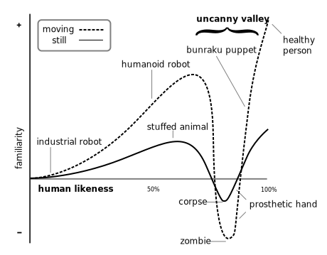

Physics of momentum scrolling
Alexey Komov, EPAM
The 'why?'
Native scrolling has a problem
Sometimes you drag the whole screen
Is it worth it to fix?
Uncanny valley of UI
Solutions?
They come down to "write your own scroll"...
or - find already working implementation
Gmail for iOS web
Here's an old article by Ryan Fioravanti
The heart of logic
doMomentum() {
const velocity = this.getEndVelocity();
const acceleration = this.getAcceleration(velocity);
const displacement = - (velocity * velocity) / (2 * acceleration);
const time = - velocity / acceleration;
const newY = this.contentOffsetY + displacement;
const transition =
`${rflect.browser.css.getSelectorCasedProperty('transform')
} ${time}ms cubic-bezier(0.33, 0.66, 0.66, 1)`;
rflect.browser.css.setTransition(this.element, transition);
rflect.browser.css.setTransform(this.element,
`translate3d(0, ${newY}px, 0)`);
this.contentOffsetY = newY;
this.isDecelerating_ = true;
}
Movement with constant acceleration (deceleration)
Natural deceleration
cubic-bezier(.33, .66, .66, 1)
Natural deceleration - in motion
What if we're past the bounds?
cubic-bezier(0, 0, .58, 1), ease-out
What if we're past the bounds - in motion
What if we hit the bounds?
rflect.ui.MomentumScroller.prototype.doMomentum = function() {
var velocity = this.getEndVelocity();
var acceleration = this.getAcceleration(velocity);
var displacement = - (velocity * velocity) / (2 * acceleration);
var time = - velocity / acceleration;
var newY = this.contentOffsetY + displacement;
if (this.positionIsOutOfBounds(newY)) {
this.setUpTransitionStage1();
} else {
// In previous example.
}
this.isDecelerating_ = true;
}
The result
Presentation is here

Contacts
Credits
- Ryan Fioravanti (@rjfioravanti) - for Gmail scrolling
- Reveal.js - for presentation engine
- Lea Verou - for cubic-bezier.com
- Unsplash.com - for gorgeous photos